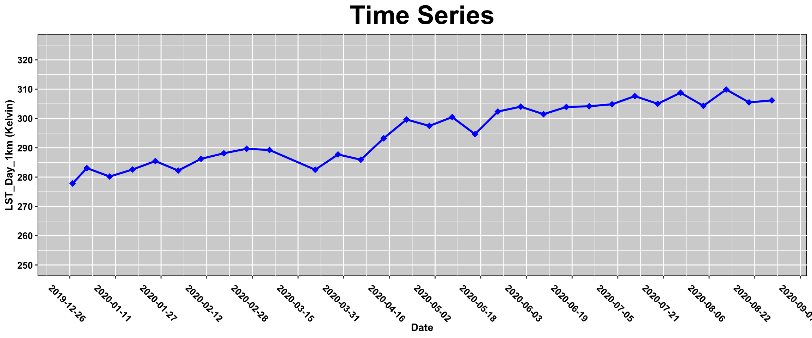

Chapter 7 NASA’s Earth Observing System (EOS)
Estimated Time: 2 hours
7.1 Learning Objectives

7.2 NASA EOS Project Mission & Design
NASA’s Earth Observing System (EOS) is a coordinated series of polar-orbiting and low inclination satellites for long-term global observations of the land surface, biosphere, solid Earth, atmosphere, and oceans. As a major component of the Earth Science Division of NASA’s Science Mission Directorate, EOS enables an improved understanding of the Earth as an integrated system.
Review NASA EOS’s Mission Profile
Completeed Missions
Current Missions
Future Missions
Credit: NASA’s Goddard Space Flight Center
7.3 NASA EOS Earth Data Assignment:
The EOSDIS Earthdata Login provides a centralized and simplified mechanism for user registration and profile management for all EOSDIS system components. End users may register and edit their profile information in one location allowing them access to the wide array of EOSDIS data and services. The EOSDIS Earthdata Login also helps the EOSDIS program better understand the user demographics and access patterns in support of planning for new value-added features and customized services that can be directed to specific users or user groups resulting in better user experience.
Earthdata Login provides user registration and authentication services and a common set of user information to all EOSDIS data centers in a manner that permits the data center to integrate their additional requirements with the Earthdata Login services. Below is a brief description of services provided by the Earthdata Login.
To turn in:
1) Follow the steps in the NASA EOSDIS documentation to sign up for an Earth Data account.
2) Write an R script that stores your user and password called EARTHDATA_Token.R and submit the following line of code via .Rmd and PDF:
source('./Tokens/EARTHDATA_Token.R') #path will change based on where you stored it
exists('user')7.4 Distributed Active Archive Centers
7.4.1 LP DAAC
The Land Processes Distributed Active Archive Center (LP DAAC) is one of several discipline-specific data centers within the NASA EOS Data and Information System (EOSDIS). The LP DAAC operates as a partnership between the U.S. Geological Survey (USGS) and the National Aeronautics and Space Administration (NASA). Data specialists, system engineers, user service representatives, and science communicators work in collaboration to support LP DAAC activities.
Watch this 4:02 minute video on LP DAAC’s 2019-2021 Prosectus
7.5 The LPDAAC Mission: Process, Archive, Distribute, Apply
The LP DAAC processes, archives, and distributes land data products to hundreds of thousands of users in the earth science community. Land data products are made universally accessible and support the ongoing monitoring of Earth’s land dynamics and environmental systems to facilitate interdisciplinary research, education, and decision-making.
Process: Raw data collected from specific satellite sensors, such as ASTER onboard NASA’s Terra satellite, are received and processed into a readable and interpretable format here at the LP DAAC, while other data undergo processing in other facilities around the country before arriving to the LP DAAC to be archived and distributed to the public.
Archive: The LP DAAC continually archives a wide variety of land remote sensing data products collected by sensors onboard satellites, aircraft, and the International Space Station (ISS). The archive currently totals more than 3.5 petabytes of data, the equivalent of listening to 800 million songs, and distributes data to over 200,000 global users.
Distribute: All data products in the archive are distributed free of charge through NASA Earthdata Search and USGS EarthExplorer search and download clients. The LP DAAC also supports tools and services, like the Application for Extracting and Exploring Analysis Ready Samples (AppEEARS), which allows users to transform and visualize data before download while offering enhanced subsetting and reprojecting capabilities.
7.5.1 How you can use LP DAAC’s data
Watch this 2:13 minute long video on searching for data at the LP DAAC
7.6 AppEEARS
The Application for Extracting and Exploring Analysis Ready Samples (AppEEARS) offers a simple and efficient way to access and transform geospatial data from a variety of federal data archives in an easy-to-use web application interface. AppEEARS enables users to subset geospatial data spatially, temporally, and by band/layer for point and area samples. AppEEARS returns not only the requested data, but also the associated quality values, and offers interactive visualizations with summary statistics in the web interface. The AppEEARS API offers users programmatic access to all features available in AppEEARS, with the exception of visualizations. The API features are demonstrated in this tutorial.
7.7 Hands on: Pulling AppEEARS Data via the API
The following section was adapted from LPDAAC’s E-Learning Tutorials on the AppEEARS API and modified to request NEON areas.
Contributing Authors: Material written by Mahsa Jami1 and Cole Krehbiel1
Contact: LPDAAC@usgs.gov
Voice: +1-866-573-3222
Organization: Land Processes Distributed Active Archive Center (LP DAAC)
Website: https://lpdaac.usgs.gov/
Date last modified: 06-12-2020
1 KBR, Inc., contractor to the U.S. Geological Survey, Earth Resources Observation and Science (EROS) Center,
Sioux Falls, South Dakota, USA. Work performed under USGS contract G15PD00467 for LP DAAC2.
2 LP DAAC Work performed under NASA contract NNG14HH33I.
Run the following chunk to install any packages you will need for this section:
# Packages you will need for AppEEARS API Tutorials
packages = c('getPass','httr','jsonlite','ggplot2','dplyr','tidyr','readr','geojsonio','geojsonR','rgdal','sp', 'raster', 'rasterVis', 'RColorBrewer', 'jsonlite')
# Identify missing packages
new.packages = packages[!(packages %in% installed.packages()[,"Package"])]
# Loop through and download the required packages
if (length(new.packages)[1]==0){
message('All packages already installed')
}else{
for (i in 1:length(new.packages)){
message(paste0('Installing: ', new.packages))
install.packages(new.packages[i])
}
}7.8 Getting Started with the AppEEARS API (Point Request)
This section demonstrates how to use R to connect to the AppEEARS API The Application for Extracting and Exploring Analysis Ready Samples (AppEEARS) offers a simple and efficient way to access and transform geospatial data from a variety of federal data archives in an easy-to-use web application interface. AppEEARS enables users to subset geospatial data spatially, temporally, and by band/layer for point and area samples. AppEEARS returns not only the requested data, but also the associated quality values, and offers interactive visualizations with summary statistics in the web interface. The AppEEARS API offers users programmatic access to all features available in AppEEARS, with the exception of visualizations. The API features are demonstrated in this tutorial.
7.8.1 Example: Submit a point request with multiple points in U.S. National Parks for extracting vegetation and land surface temperature data
In this tutorial, Connecting to the AppEEARS API, querying the list of available products, submitting a point sample request, downloading the request, working with the AppEEARS Quality API, and loading the results into R for visualization are covered. AppEEARS point requests allow users to subset their desired data using latitude/longitude geographic coordinate pairs (points) for a time period of interest, and for specific data layers within data products. AppEEARS returns the valid data from the parameters defined within the sample request.
7.8.1.1 Data Used in the Example:
- Data layers:
- Combined MODIS Leaf Area Index (LAI)
- MCD15A3H.006, 500m, 4 day: ‘Lai_500m’
- MCD15A3H.006, 500m, 4 day: ‘Lai_500m’
- Terra MODIS Land Surface Temperature
- MOD11A2.006, 1000m, 8 day: ‘LST_Day_1km’, ‘LST_Night_1km’
- Combined MODIS Leaf Area Index (LAI)
7.8.2 Topics Covered in this tutorial:
- Getting Started
1a. Load Packages 1b. Set Up the Output Directory
1c. Login
- Query Available Products
2a. Search and Explore Available Products
2b. Search and Explore Available Layers
- Submit a Point Request
3a. Compile a JSON Object 3b. Submit a Task Request 3c. Retrieve Task Status
- Download a Request
4a. Explore Files in Request Output
4b. Download Files in a Request (Automation)
- Explore AppEEARS Quality API
5a. List Quality Layers
5b. Show Quality Values
5c. Decode Quality Values
- BONUS: Load Request Output and Visualize
6a. Load CSV
6b. Plot Results (Line/Scatter Plots)
7.8.3 Prerequisites:
A NASA Earthdata Login account is required to login to the AppEEARS API and submit a request . You can create an account at the link provided.
Install R and RStudio. These tutorials have been tested on Windows and MAc systems using R Version 4.0.0, RStudio version 1.1.463, and the specifications listed below.
- Required packages:
getPass
httr
jsonlite
warnings
- To read and visualize the tabular data:
dplyr
tidyrreadr
ggplot2
- Required packages:
7.8.4 Procedures:
7.8.4.1 Getting Started:
Clone/download AppEEARS API Getting Started in R Repository from the LP DAAC Data User Resources Repository or pull code from this textbook.
Open the
AppEEARS_API_R.Rprojfile to directly open the project. Next, select theAppEEARS_API_Point_R.Rmdfrom the files list and open it.
7.8.4.2 Environment Setup:
7.8.4.3 1. Check the version of R using version and RStudio using RStudio.Version() and update them if needed.
- Windows
- Install and load installr:
Install.packages("installr");library(installr)
- Copy/Update the existing packages to the new R installation:
UpdateR()
- Open RStudio, go to Help > Check for Updates to install newer version of RStudio (if available).
- Install and load installr:
- Mac
- Go to https://cloud.r-project.org/bin/macosx/.
- Download the latest release (R-4.0.1.pkg) and finish the installation.
- Open RStudio, go to Help > Check for Updates to install newer version of RStudio (if available).
- To update packages, go to Tools > Check for Package Updates. If updates are available, select All, and click Install Updates.
- Go to https://cloud.r-project.org/bin/macosx/.
7.8.5 AppEEARS Information:
To access AppEEARS, visit: https://lpdaacsvc.cr.usgs.gov/appeears/.
For comprehensive documentation of the full functionality of the AppEEARS API, please see the AppEEARS API Documentation.
7.9 1. Getting Started
7.10 1a. Load Packages
First, load the R packages necessary to run the tutorial.
# Load necessary packages into R
library(getPass) # A micro-package for reading passwords
library(httr) # To send a request to the server/receive a response from the server
library(jsonlite) # Implements a bidirectional mapping between JSON data and the most important R data types
library(ggplot2) # Functions for graphing and mapping
library(tidyr) # Function for working with tabular data
library(dplyr) # Function for working with tabular data
library(readr) # Read rectangular data like CSV7.11 1b. Set Up the Output Directory
Set your input directory, and create an output directory for the results.
outDir <- file.path('./data/') # Create an output directory if it doesn't exist
suppressWarnings(dir.create(outDir)) 7.12 1c. Login
To submit a request, you must first login to the AppEEARS API. Use the getpass package to enter your NASA Earthdata login Username and Password. When prompted after executing the code block below, enter your username followed by your password.
## [1] TRUEDecode the username and password to be used to post login request.
Next, assign the AppEEARS API URL to a static variable.
Use the httr package to post your username and password. A successful login will provide you with a token to be used later in this tutorial to submit a request. For more information or if you are experiencing difficulties, please see the API Documentation.
# Insert API URL, call login service, set the component of HTTP header, and post the request to the server
response <- httr::POST(paste0(API_URL,"login"),
add_headers("Authorization" = paste("Basic", gsub("\n", "", secret)),
"Content-Type" ="application/x-www-form-urlencoded;charset=UTF-8"),
body = "grant_type=client_credentials")
response_content <- content(response) # Retrieve the content of the request
token_response <- toJSON(response_content, auto_unbox = TRUE) # Convert the response to the JSON object
remove(user, password, secret, response) # Remove the variables that are not needed anymore
prettify(token_response) # Print the prettified response## {
## "token_type": "Bearer",
## "token": "dZBdb-Pn7AdlNi8uxzWpWbTAK_6M-H6PBKKmm5DOOvnb-GI-6TFM5c-e_48CkPJyM71fWQ3MbRb9Dx7hNwD8QA",
## "expiration": "2020-10-09T20:33:11Z"
## }
## Above, you should see a Bearer token. Notice that this token will expire approximately 48 hours after being acquired.
7.13 2. Query Available Products
The product API provides details about all of the products and layers available in AppEEARS. For more information, please see the API Documentation.
Below, call the product API to list all of the products available in AppEEARS.
prods_req <- GET(paste0(API_URL, "product")) # Request the info of all products from product service
prods_content <- content(prods_req) # Retrieve the content of request
all_Prods <- toJSON(prods_content, auto_unbox = TRUE) # Convert the info to JSON object
remove(prods_req, prods_content) # Remove the variables that are not needed anymore
# prettify(all_Prods) # Print the prettified product response7.14 2a. Search and Explore Available Products
Create a list indexed by product name to make it easier to query a specific product.
# Divides information from each product.
divided_products <- split(fromJSON(all_Prods), seq(nrow(fromJSON(all_Prods))))
# Create a list indexed by the product name and version
products <- setNames(divided_products,fromJSON(all_Prods)$ProductAndVersion)
# Print no. products available in AppEEARS
sprintf("AppEEARS currently supports %i products." ,length(products)) ## [1] "AppEEARS currently supports 120 products."Next, look at the product’s names and descriptions. Below, the ‘ProductAndVersion’ and ‘Description’ are printed for all products.
# Loop through the products in the list and print the product name and description
for (p in products){
print(paste0(p$ProductAndVersion," is ",p$Description," from ",p$Source))
}## [1] "GPW_DataQualityInd.004 is Quality of Input Data for Population Count and Density Grids from SEDAC"
## [1] "GPW_UN_Adj_PopCount.004 is UN-adjusted Population Count from SEDAC"
## [1] "GPW_UN_Adj_PopDensity.004 is UN-adjusted Population Density from SEDAC"
## [1] "MCD12Q1.006 is Land Cover Type from LP DAAC"
## [1] "MCD12Q2.006 is Land Cover Dynamics from LP DAAC"
## [1] "MCD15A2H.006 is Leaf Area Index (LAI) and Fraction of Photosynthetically Active Radiation (FPAR) from LP DAAC"
## [1] "MCD15A3H.006 is Leaf Area Index (LAI) and Fraction of Photosynthetically Active Radiation (FPAR) from LP DAAC"
## [1] "MCD43A1.006 is Bidirectional Reflectance Distribution Function (BRDF) and Albedo from LP DAAC"
## [1] "MCD43A3.006 is Bidirectional Reflectance Distribution Function (BRDF) and Albedo from LP DAAC"
## [1] "MCD43A4.006 is Bidirectional Reflectance Distribution Function (BRDF) and Albedo from LP DAAC"
## [1] "MCD64A1.006 is Burned Area (fire) from LP DAAC"
## [1] "MOD09A1.006 is Surface Reflectance Bands 1-7 from LP DAAC"
## [1] "MOD09GA.006 is Surface Reflectance Bands 1-7 from LP DAAC"
## [1] "MOD09GQ.006 is Surface Reflectance Bands 1-2 from LP DAAC"
## [1] "MOD09Q1.006 is Surface Reflectance Bands 1-2 from LP DAAC"
## [1] "MOD10A1.005 is Snow Cover from NSIDC DAAC"
## [1] "MOD10A1.006 is Snow Cover (NDSI) from NSIDC DAAC"
## [1] "MOD10A2.005 is Snow Cover from NSIDC DAAC"
## [1] "MOD10A2.006 is Snow Cover from NSIDC DAAC"
## [1] "MOD11A1.006 is Land Surface Temperature & Emissivity (LST&E) from LP DAAC"
## [1] "MOD11A2.006 is Land Surface Temperature & Emissivity (LST&E) from LP DAAC"
## [1] "MOD13A1.006 is Vegetation Indices (NDVI & EVI) from LP DAAC"
## [1] "MOD13A2.006 is Vegetation Indices (NDVI & EVI) from LP DAAC"
## [1] "MOD13A3.006 is Vegetation Indices (NDVI & EVI) from LP DAAC"
## [1] "MOD13Q1.006 is Vegetation Indices (NDVI & EVI) from LP DAAC"
## [1] "MOD14A2.006 is Thermal Anomalies and Fire from LP DAAC"
## [1] "MOD15A2H.006 is Leaf Area Index (LAI) and Fraction of Photosynthetically Active Radiation (FPAR) from LP DAAC"
## [1] "MOD16A2.006 is Evapotranspiration (ET & LE) from LP DAAC"
## [1] "MOD16A2GF.006 is Net Evapotranspiration Gap-Filled (ET & LE) from LP DAAC"
## [1] "MOD16A3GF.006 is Net Evapotranspiration Gap-Filled (ET & LE) from LP DAAC"
## [1] "MOD17A2H.006 is Gross Primary Productivity (GPP) from LP DAAC"
## [1] "MOD17A2HGF.006 is Gross Primary Productivity (GPP) from LP DAAC"
## [1] "MOD17A3HGF.006 is Net Primary Production (NPP) Gap-Filled from LP DAAC"
## [1] "MOD44B.006 is Vegetation Continuous Fields (VCF) from LP DAAC"
## [1] "MOD44W.006 is Land/Water Mask from LP DAAC"
## [1] "MODOCGA.006 is Ocean Reflectance Bands 8-16 from LP DAAC"
## [1] "MODTBGA.006 is Thermal Bands and Albedo from LP DAAC"
## [1] "MYD09A1.006 is Surface Reflectance Bands 1-7 from LP DAAC"
## [1] "MYD09GA.006 is Surface Reflectance Bands 1-7 from LP DAAC"
## [1] "MYD09GQ.006 is Surface Reflectance Bands 1-2 from LP DAAC"
## [1] "MYD09Q1.006 is Surface Reflectance Bands 1-2 from LP DAAC"
## [1] "MYD10A1.005 is Snow Cover from NSIDC DAAC"
## [1] "MYD10A1.006 is Snow Cover (NDSI) from NSIDC DAAC"
## [1] "MYD10A2.005 is Snow Cover from NSIDC DAAC"
## [1] "MYD10A2.006 is Snow Cover from NSIDC DAAC"
## [1] "MYD11A1.006 is Land Surface Temperature & Emissivity (LST&E) from LP DAAC"
## [1] "MYD11A2.006 is Land Surface Temperature & Emissivity (LST&E) from LP DAAC"
## [1] "MYD13A1.006 is Vegetation Indices (NDVI & EVI) from LP DAAC"
## [1] "MYD13A2.006 is Vegetation Indices (NDVI & EVI) from LP DAAC"
## [1] "MYD13A3.006 is Vegetation Indices (NDVI & EVI) from LP DAAC"
## [1] "MYD13Q1.006 is Vegetation Indices (NDVI & EVI) from LP DAAC"
## [1] "MYD14A2.006 is Thermal Anomalies and Fire from LP DAAC"
## [1] "MYD15A2H.006 is Leaf Area Index (LAI) and Fraction of Photosynthetically Active Radiation (FPAR) from LP DAAC"
## [1] "MYD16A2.006 is Evapotranspiration (ET & LE) from LP DAAC"
## [1] "MYD16A2GF.006 is Net Evapotranspiration Gap-Filled (ET & LE) from LP DAAC"
## [1] "MYD16A3GF.006 is Net Evapotranspiration Gap-Filled (ET & LE) from LP DAAC"
## [1] "MYD17A2H.006 is Gross Primary Productivity (GPP) from LP DAAC"
## [1] "MYD17A2HGF.006 is Gross Primary Productivity (GPP) Gap-Filled from LP DAAC"
## [1] "MYD17A3HGF.006 is Net Primary Production (NPP) Gap-Filled from LP DAAC"
## [1] "MYD21A1D.006 is Land Surface Temperature & Emissivity (LST&E) from LP DAAC"
## [1] "MYD21A1N.006 is Land Surface Temperature & Emissivity (LST&E) from LP DAAC"
## [1] "MYD21A2.006 is Land Surface Temperature & Emissivity (LST&E) from LP DAAC"
## [1] "MYDOCGA.006 is Ocean Reflectance Bands 8-16 from LP DAAC"
## [1] "MYDTBGA.006 is Thermal Bands and Albedo from LP DAAC"
## [1] "NASADEM_NC.001 is Elevation from LP DAAC"
## [1] "NASADEM_NUMNC.001 is Source from LP DAAC"
## [1] "SPL3SMP_E.003 is Enhanced L3 Radiometer Soil Moisture from NSIDC DAAC"
## [1] "SPL3SMP.006 is Soil Moisture from NSIDC DAAC"
## [1] "SPL4CMDL.004 is Carbon Net Ecosystem Exchange from NSIDC DAAC"
## [1] "SPL4SMGP.004 is Surface and Root Zone Soil Moisture from NSIDC DAAC"
## [1] "SPL3FTP.002 is Freeze/Thaw State from NSIDC DAAC"
## [1] "SRTMGL1_NC.003 is Elevation (DEM) from LP DAAC"
## [1] "SRTMGL1_NUMNC.003 is Source (DEM) from LP DAAC"
## [1] "SRTMGL3_NC.003 is Elevation (DEM) from LP DAAC"
## [1] "SRTMGL3_NUMNC.003 is Source (DEM) from LP DAAC"
## [1] "ASTGTM_NC.003 is Elevation from LP DAAC"
## [1] "ASTGTM_NUMNC.003 is Source from LP DAAC"
## [1] "ASTWBD_ATTNC.001 is Water Bodies Database Attributes from LP DAAC"
## [1] "ASTWBD_NC.001 is Water Bodies Database Elevation from LP DAAC"
## [1] "VNP09H1.001 is Surface Reflectance from LP DAAC"
## [1] "VNP09A1.001 is Surface Reflectance from LP DAAC"
## [1] "VNP13A1.001 is Vegetation Indices (NDVI & EVI) from LP DAAC"
## [1] "VNP13A2.001 is Vegetation Indices (NDVI & EVI) from LP DAAC"
## [1] "VNP13A3.001 is Vegetation Indices (NDVI & EVI) from LP DAAC"
## [1] "VNP14A1.001 is Thermal Anomalies/Fire from LP DAAC"
## [1] "VNP15A2H.001 is Leaf Area Index (LAI) and Fraction of Photosynthetically Active Radiation (FPAR) from LP DAAC"
## [1] "VNP21A1D.001 is Land Surface Temperature & Emissivity Day (LST&E) from LP DAAC"
## [1] "VNP21A1N.001 is Land Surface Temperature & Emissivity Night (LST&E) from LP DAAC"
## [1] "VNP21A2.001 is Land Surface Temperature & Emissivity (LST&E) from LP DAAC"
## [1] "VNP43IA1.001 is BRDF-Albedo Model Parameters from LP DAAC"
## [1] "VNP43IA2.001 is BRDF-Albedo Quality from LP DAAC"
## [1] "VNP43IA3.001 is Albedo (BRDF) from LP DAAC"
## [1] "VNP43IA4.001 is Nadir BRDF-Adjusted Reflectance from LP DAAC"
## [1] "VNP43MA1.001 is BRDF-Albedo Model Parameters from LP DAAC"
## [1] "VNP43MA2.001 is BRDF-Albedo Quality from LP DAAC"
## [1] "VNP43MA3.001 is Albedo (BRDF) from LP DAAC"
## [1] "VNP43MA4.001 is Nadir BRDF-Adjusted Reflectance from LP DAAC"
## [1] "CU_LC08.001 is CONUS Landsat 8 Surface Reflectance from USGS"
## [1] "CU_LE07.001 is CONUS Landsat 7 Surface Reflectance from USGS"
## [1] "CU_LT05.001 is CONUS Landsat 5 Surface Reflectance from USGS"
## [1] "CU_LT04.001 is CONUS Landsat 4 Surface Reflectance from USGS"
## [1] "AK_LC08.001 is Alaska Landsat 8 Surface Reflectance from USGS"
## [1] "AK_LE07.001 is Alaska Landsat 7 Surface Reflectance from USGS"
## [1] "AK_LT05.001 is Alaska Landsat 5 Surface Reflectance from USGS"
## [1] "AK_LT04.001 is Alaska Landsat 4 Surface Reflectance from USGS"
## [1] "HI_LC08.001 is Hawaii Landsat 8 Surface Reflectance from USGS"
## [1] "HI_LE07.001 is Hawaii Landsat 7 Surface Reflectance from USGS"
## [1] "HI_LT05.001 is Hawaii Landsat 5 Surface Reflectance from USGS"
## [1] "HI_LT04.001 is Hawaii Landsat 4 Surface Reflectance from USGS"
## [1] "DAYMET.003 is Daily Surface Weather Data for North America from ORNL"
## [1] "SSEBop_ET.004 is SSEBop Actual Evapotranspiration (ETa) from USGS"
## [1] "eMODIS_Smoothed_NDVI.001 is eMODIS Smoothed Normalized Difference Vegetation Index (NDVI) from USGS"
## [1] "ECO2LSTE.001 is Land Surface Temperature & Emissivity (LST&E) from LP DAAC"
## [1] "ECO2CLD.001 is Cloud Mask from LP DAAC"
## [1] "ECO3ETPTJPL.001 is Evapotranspiration PT-JPL from LP DAAC"
## [1] "ECO3ANCQA.001 is L3/L4 Ancillary Data Quality Assurance (QA) Flags from LP DAAC"
## [1] "ECO4ESIPTJPL.001 is Evaporative Stress Index PT-JPL from LP DAAC"
## [1] "ECO4WUE.001 is Water Use Efficiency from LP DAAC"
## [1] "ECO1BGEO.001 is Geolocation from LP DAAC"
## [1] "ECO1BMAPRAD.001 is Resampled Radiance from LP DAAC"The product service provides many useful details, including if a product is currently available in AppEEARS, a description, and information on the spatial and temporal resolution. Below, the product details are retrieved using ‘ProductAndVersion’.
# Convert the MCD15A3H.006 info to JSON object and print the prettified info
prettify(toJSON(products$"MCD15A3H.006")) ## [
## {
## "Product": "MCD15A3H",
## "Platform": "Combined MODIS",
## "Description": "Leaf Area Index (LAI) and Fraction of Photosynthetically Active Radiation (FPAR)",
## "RasterType": "Tile",
## "Resolution": "500m",
## "TemporalGranularity": "4 day",
## "Version": "006",
## "Available": true,
## "DocLink": "https://doi.org/10.5067/MODIS/MCD15A3H.006",
## "Source": "LP DAAC",
## "TemporalExtentStart": "2002-07-04",
## "TemporalExtentEnd": "Present",
## "Deleted": false,
## "DOI": "10.5067/MODIS/MCD15A3H.006",
## "ProductAndVersion": "MCD15A3H.006"
## }
## ]
## Also, the products can be searched using their description. Below, search for products containing Leaf Area Index in their description and make a list of their productAndVersion.
LAI_Products <- list() # Create an empty list
for (p in products){ # Loop through the product list
if (grepl('Leaf Area Index', p$Description )){ # Look through the product description for a keyword
LAI_Products <- append(LAI_Products, p$ProductAndVersion) # Append the LAI products to the list
}
}
LAI_Products## [[1]]
## [1] "MCD15A2H.006"
##
## [[2]]
## [1] "MCD15A3H.006"
##
## [[3]]
## [1] "MOD15A2H.006"
##
## [[4]]
## [1] "MYD15A2H.006"
##
## [[5]]
## [1] "VNP15A2H.001"Using the info above, Create a list of desired products.
desired_products <- c('MCD15A3H.006','MOD11A2.006') # Create a vector of desired products
desired_products## [1] "MCD15A3H.006" "MOD11A2.006"7.15 2b. Search and Explore Available Layers
This API call will list all of the layers available for a given product. Each product is referenced by its ProductAndVersion property which is also referred to as the product_id. First, request the layers for the MCD15A3H.006 product.
# Request layers for the 1st product in the list: MCD15A3H.006
MCD15A3H_req <- GET(paste0(API_URL,"product/", desired_products[1])) # Request the info of a product from product URL
MCD15A3H_content <- content(MCD15A3H_req) # Retrieve content of the request
MCD15A3H_response <- toJSON(MCD15A3H_content, auto_unbox = TRUE) # Convert the content to JSON object
remove(MCD15A3H_req, MCD15A3H_content) # Remove the variables that are not needed anymore
#prettify(MCD15A3H_response) # Print the prettified response
names(fromJSON(MCD15A3H_response)) # print the layer's names ## [1] "FparExtra_QC" "FparLai_QC" "FparStdDev_500m" "Fpar_500m"
## [5] "LaiStdDev_500m" "Lai_500m"Next, request the layers for the MOD11A2.006 product.
MOD11_req <- GET(paste0(API_URL,"product/", desired_products[2])) # Request the info of a product from product URL
MOD11_content <- content(MOD11_req) # Retrieve content of the request
MOD11_response <- toJSON(MOD11_content, auto_unbox = TRUE) # Convert the content to JSON object
remove(MOD11_req, MOD11_content) # Remove the variables that are not needed anymore
names(fromJSON(MOD11_response)) # print the layer names## [1] "Clear_sky_days" "Clear_sky_nights" "Day_view_angl" "Day_view_time"
## [5] "Emis_31" "Emis_32" "LST_Day_1km" "LST_Night_1km"
## [9] "Night_view_angl" "Night_view_time" "QC_Day" "QC_Night"Lastly, select the desired layers and pertinent products and make a data frame using this information. This data frame will be inserted into the nested data frame that will be used to create a JSON object to submit a request in Section 3.
desired_layers <- c("LST_Day_1km","LST_Night_1km","Lai_500m") # Create a vector of desired layers
desired_prods <- c("MOD11A2.006","MOD11A2.006","MCD15A3H.006") # Create a vector of products including the desired layers
# Create a data frame including the desired data products and layers
layers <- data.frame(product = desired_prods, layer = desired_layers) 7.16 3. Submit a Point Request
The Submit task API call provides a way to submit a new request to be processed. It can accept data via JSON or query string. In the example below, create a JSON object and submit a request. Tasks in AppEEARS correspond to each request associated with your user account. Therefore, each of the calls to this service requires an authentication token (see Section 1c.).
7.17 3a. Compile a JSON Object
In this section, begin by setting up the information needed for a nested data frame that will be later converted to a JSON object for submitting an AppEEARS point request. For detailed information on required JSON parameters, see the API Documentation.
For point requests, beside the date range and desired layers information, the coordinates property must also be inside the task object. Optionally, set id and category properties to further identify your selected coordinates.
We’ll start by requesting point-based data for NEON.D17.SOAP and NEON.D17.SJER:
startDate <- "01-01-2020" # Start of the date range for which to extract data: MM-DD-YYYY
endDate <- "10-01-2020" # End of the date range for which to extract data: MM-DD-YYYY
recurring <- FALSE # Specify True for a recurring date range
#yearRange <- [2000,2016] # If recurring = True, set yearRange, change start/end date to MM-DD
lat <- c(37.0334, 37.1088) # Latitude of the point sites
lon <- c(-119.2622, -119.7323) # Longitude of the point sites
id <- c("0","1") # ID for the point sites
category <- c("SOAP", "SJER") # Category for point sites
taskName <- 'NEON SOAP SJER Vegetation' # Enter name of the task here
taskType <- 'point' # Specify the task type, it can be either "area" or "point"To be able to successfully submit a task, the JSON object should be structured in a certain way. The code chunk below uses the information from the previous chunk to create a nested data frame. This nested data frame will be converted to JSON object that can be used to complete the request.
# Create a data frame including the date range for the request
date <- data.frame(startDate = startDate, endDate = endDate)
# Create a data frame including lat and long coordinates. ID and category name is optional.
coordinates <- data.frame(id = id, longitude = lon, latitude = lat, category = category)
task_info <- list(date,layers, coordinates) # Create a list of data frames
names(task_info) <- c("dates", "layers", "coordinates") # Assign names
task <- list(task_info, taskName, taskType) # Create a nested list
names(task) <- c("params", "task_name", "task_type") # Assign names
remove(date, layers, coordinates, task_info) # Remove the variables that are not needed anymoretoJSON function from jsonlite package converts the type of data frame to a string that can be recognized as a JSON object to be submitted as a point request.
7.18 3b. Submit a Task Request
Token information is needed to submit a request. Below the login token is assigned to a variable.
Below, post a call to the API task service, using the task_json created above.
# Post the point request to the API task service
response <- POST(paste0(API_URL, "task"),
body = task_json ,
encode = "json",
add_headers(Authorization = token, "Content-Type" = "application/json"))
task_content <- content(response) # Retrieve content of the request
task_response <- prettify(toJSON(task_content, auto_unbox = TRUE))# Convert the content to JSON object
remove(response, task_content) # Remove the variables that are not needed anymore
task_response # Print the prettified task response## {
## "task_id": "3a808dfa-ff0b-48f9-ac7b-9f598d73233b",
## "status": "pending"
## }
## 7.19 3c. Retrieve Task Status
This API call will list all of the requests associated with your user account, automatically sorted by date descending with the most recent requests listed first. The AppEEARS API contains some helpful formatting resources. Below, limit the API response to 2 entries for the last 2 requests and set pretty to True to format the response as an organized JSON object to make it easier to read. Additional information on AppEEARS API retrieve task, pagination, and formatting can be found in the API documentation.
params <- list(limit = 2, pretty = TRUE) # Set up query parameters
# Request the task status of last 2 requests from task URL
response_req <- GET(paste0(API_URL,"task"), query = params, add_headers(Authorization = token))
response_content <- content(response_req) # Retrieve content of the request
status_response <- toJSON(response_content, auto_unbox = TRUE) # Convert the content to JSON object
remove(response_req, response_content) # Remove the variables that are not needed anymore
prettify(status_response) # Print the prettified response## [
## {
## "params": {
## "dates": [
## {
## "endDate": "10-01-2020",
## "startDate": "01-01-2020"
## }
## ],
## "layers": [
## {
## "layer": "LST_Day_1km",
## "product": "MOD11A2.006"
## },
## {
## "layer": "LST_Night_1km",
## "product": "MOD11A2.006"
## },
## {
## "layer": "Lai_500m",
## "product": "MCD15A3H.006"
## }
## ]
## },
## "status": "pending",
## "created": "2020-10-07T21:37:14.871259",
## "task_id": "3a808dfa-ff0b-48f9-ac7b-9f598d73233b",
## "updated": "2020-10-07T21:37:14.883937",
## "user_id": "kdw223@nau.edu",
## "estimate": {
## "request_size": 204
## },
## "task_name": "NEON SOAP SJER Vegetation",
## "task_type": "point",
## "api_version": "v1",
## "svc_version": "2.47",
## "web_version": {
##
## },
## "expires_on": "2020-11-06T21:37:14.883937"
## },
## {
## "error": {
##
## },
## "params": {
## "dates": [
## {
## "endDate": "10-01-2020",
## "startDate": "01-01-2020"
## }
## ],
## "layers": [
## {
## "layer": "LST_Day_1km",
## "product": "MOD11A2.006"
## },
## {
## "layer": "LST_Night_1km",
## "product": "MOD11A2.006"
## },
## {
## "layer": "Lai_500m",
## "product": "MCD15A3H.006"
## }
## ]
## },
## "status": "done",
## "created": "2020-10-07T21:00:20.497312",
## "task_id": "de45360e-d6e4-4577-97a1-760b9893c002",
## "updated": "2020-10-07T21:02:10.990738",
## "user_id": "kdw223@nau.edu",
## "attempts": 1,
## "estimate": {
## "request_size": 204
## },
## "retry_at": {
##
## },
## "completed": "2020-10-07T21:02:10.987115",
## "task_name": "NEON SOAP SJER Vegetation",
## "task_type": "point",
## "api_version": "v1",
## "svc_version": "2.47",
## "web_version": {
##
## },
## "size_category": "0",
## "expires_on": "2020-11-06T21:02:10.990738"
## }
## ]
## The task_id that was generated when submitting your request can also be used to retrieve a task status.
task_id <- fromJSON(task_response)$task_id # Extract the task_id of submitted point request
# Request the task status of a task with the provided task_id from task URL
status_req <- GET(paste0(API_URL,"task/", task_id), add_headers(Authorization = token))
status_content <- content(status_req) # Retrieve content of the request
statusResponse <-toJSON(status_content, auto_unbox = TRUE) # Convert the content to JSON object
stat <- fromJSON(statusResponse)$status # Assign the task status to a variable
remove(status_req, status_content) # Remove the variables that are not needed anymore
prettify(statusResponse) # Print the prettified response## {
## "params": {
## "dates": [
## {
## "endDate": "10-01-2020",
## "startDate": "01-01-2020"
## }
## ],
## "layers": [
## {
## "layer": "LST_Day_1km",
## "product": "MOD11A2.006"
## },
## {
## "layer": "LST_Night_1km",
## "product": "MOD11A2.006"
## },
## {
## "layer": "Lai_500m",
## "product": "MCD15A3H.006"
## }
## ],
## "coordinates": [
## {
## "id": "0",
## "category": "SOAP",
## "latitude": 37.0334,
## "longitude": -119.2622
## },
## {
## "id": "1",
## "category": "SJER",
## "latitude": 37.1088,
## "longitude": -119.7323
## }
## ]
## },
## "status": "pending",
## "created": "2020-10-07T21:37:14.871259",
## "task_id": "3a808dfa-ff0b-48f9-ac7b-9f598d73233b",
## "updated": "2020-10-07T21:37:14.883937",
## "user_id": "kdw223@nau.edu",
## "estimate": {
## "request_size": 204
## },
## "task_name": "NEON SOAP SJER Vegetation",
## "task_type": "point",
## "api_version": "v1",
## "svc_version": "2.47",
## "web_version": {
##
## },
## "expires_on": "2020-11-06T21:37:14.883937"
## }
## Retrieve the task status every 5 seconds. The task status should be done to be able to download the output.
while (stat != 'done') {
Sys.sleep(5)
# Request the task status and retrieve content of request from task URL
stat_content <- content(GET(paste0(API_URL,"task/", task_id), add_headers(Authorization = token)))
stat <-fromJSON(toJSON(stat_content, auto_unbox = TRUE))$status # Get the status
remove(stat_content)
print(stat)
}## [1] "pending"
## [1] "pending"
## [1] "pending"
## [1] "pending"
## [1] "pending"
## [1] "pending"
## [1] "pending"
## [1] "pending"
## [1] "pending"
## [1] "pending"
## [1] "pending"
## [1] "pending"
## [1] "pending"
## [1] "pending"
## [1] "pending"
## [1] "processing"
## [1] "processing"
## [1] "processing"
## [1] "processing"
## [1] "processing"
## [1] "processing"
## [1] "done"7.20 4. Download a Request
7.21 4a. Explore Files in Request Output
Before downloading the request output, examine the files contained in the request output.
# Request the task bundle info from API bundle URL
response <- GET(paste0(API_URL, "bundle/", task_id), add_headers(Authorization = token))
response_content <- content(response) # Retrieve content of the request
bundle_response <- toJSON(response_content, auto_unbox = TRUE) # Convert the content to JSON object
prettify(bundle_response) # Print the prettified response## {
## "files": [
## {
## "sha256": "e12e3634d11491fd77aa4c8f347b94304885746713852d21a08c635b2a9e4852",
## "file_id": "82ab979e-0dbe-4869-b676-88193c79727f",
## "file_name": "NEON-SOAP-SJER-Vegetation-MCD15A3H-006-results.csv",
## "file_size": 68260,
## "file_type": "csv"
## },
## {
## "sha256": "e465df89151b28d63a1dda2420cedec7f24b383d03e0482083839565a27f8d5d",
## "file_id": "ab2e3574-3c50-44dd-bafd-c30b1fb4d99d",
## "file_name": "NEON-SOAP-SJER-Vegetation-MOD11A2-006-results.csv",
## "file_size": 28570,
## "file_type": "csv"
## },
## {
## "sha256": "100dd40b43760430c900eea1d39b78a73bf880ae397020ad29bcf1c58947e8b5",
## "file_id": "765639a0-7278-497d-aca6-433ebf41d021",
## "file_name": "NEON-SOAP-SJER-Vegetation-granule-list.txt",
## "file_size": 11402,
## "file_type": "txt"
## },
## {
## "sha256": "6b824abc02ce3e49409e332e5b941533a66b2ff4c2a362b4d3b5b31b4266ecd5",
## "file_id": "16eae3d4-8876-403e-b673-2e29f2d8324a",
## "file_name": "NEON-SOAP-SJER-Vegetation-request.json",
## "file_size": 883,
## "file_type": "json"
## },
## {
## "sha256": "3e025646ef6eadb42eb4d9f172db96ed824bbc72333519f0c8f44c3449fe4d7d",
## "file_id": "ff3f16d7-75c2-4185-8ce6-f6a3cc4de17c",
## "file_name": "NEON-SOAP-SJER-Vegetation-MCD15A3H-006-metadata.xml",
## "file_size": 17255,
## "file_type": "xml"
## },
## {
## "sha256": "650cd511fcfc442fe675e35d14a244247c565085d5dcbb215782354d7ceda774",
## "file_id": "ffa0432e-cc7a-4cde-8264-6ad97dbed7c3",
## "file_name": "NEON-SOAP-SJER-Vegetation-MOD11A2-006-metadata.xml",
## "file_size": 17217,
## "file_type": "xml"
## },
## {
## "sha256": "337cd424036258f85f9d216debfe1f9b0649bf2971ea1ce356a44b9c9ca51078",
## "file_id": "aa98b009-c955-468d-bd03-9ca7068969b9",
## "file_name": "README.md",
## "file_size": 17894,
## "file_type": "txt"
## }
## ],
## "created": "2020-10-07T21:38:39.407692",
## "task_id": "3a808dfa-ff0b-48f9-ac7b-9f598d73233b",
## "updated": "2020-10-07T21:39:07.732995",
## "bundle_type": "point"
## }
## 7.22 4b. Download Files in a Request (Automation)
The bundle API provides information about completed tasks. For any completed task, a bundle can be queried to return the files contained as a part of the task request. Below, call the bundle API and return all of the output files. Next, read the contents of the bundle in JSON format and loop through file_id to automate downloading all of the output files into the output directory. For more information, please see AppEEARS API Documentation.
bundle <- fromJSON(bundle_response)$files
for (id in bundle$file_id){
# retrieve the filename from the file_id
filename <- bundle[bundle$file_id == id,]$file_name
# create a destination directory to store the file in
filepath <- paste(outDir,filename, sep = "/")
suppressWarnings(dir.create(dirname(filepath)))
# write the file to disk using the destination directory and file name
response <- GET(paste0(API_URL, "bundle/", task_id, "/", id),
write_disk(filepath, overwrite = TRUE),
progress(),
add_headers(Authorization = token))
}7.23 5. Explore AppEEARS Quality Service
The quality API provides quality details about all of the data products available in AppEEARS. Below are examples of how to query the quality API for listing quality products, layers, and values. The final example (Section 5c.) demonstrates how AppEEARS quality services can be leveraged to decode pertinent quality values for your data. For more information visit AppEEARS API documentation.
First, reset pagination to include offset which allows you to set the number of results to skip before starting to return entries. Next, make a call to list all of the data product layers and the associated quality product and layer information.
params <- list(limit = 6, offset = 20, pretty = TRUE) # Set up the query parameters
q_req <- GET(paste0(API_URL, "quality"), query = params) # Request the quality info from quality API_URL
q_content <- content(q_req) # Retrieve the content of request
q_response <- toJSON(q_content, auto_unbox = TRUE) # Convert the info to JSON object
remove(params, q_req, q_content) # Remove the variables that are not needed
prettify(q_response) # Print the prettified quality information## [
## {
## "ProductAndVersion": "CU_LT05.001",
## "Layer": "SRB1",
## "QualityProductAndVersion": "CU_LT05.001",
## "QualityLayers": [
## "PIXELQA"
## ]
## },
## {
## "ProductAndVersion": "CU_LT05.001",
## "Layer": "SRB2",
## "QualityProductAndVersion": "CU_LT05.001",
## "QualityLayers": [
## "PIXELQA"
## ]
## },
## {
## "ProductAndVersion": "CU_LT05.001",
## "Layer": "SRB3",
## "QualityProductAndVersion": "CU_LT05.001",
## "QualityLayers": [
## "PIXELQA"
## ]
## },
## {
## "ProductAndVersion": "CU_LT05.001",
## "Layer": "SRB4",
## "QualityProductAndVersion": "CU_LT05.001",
## "QualityLayers": [
## "PIXELQA"
## ]
## },
## {
## "ProductAndVersion": "CU_LT05.001",
## "Layer": "SRB5",
## "QualityProductAndVersion": "CU_LT05.001",
## "QualityLayers": [
## "PIXELQA"
## ]
## },
## {
## "ProductAndVersion": "CU_LT05.001",
## "Layer": "SRB7",
## "QualityProductAndVersion": "CU_LT05.001",
## "QualityLayers": [
## "PIXELQA"
## ]
## }
## ]
## 7.24 5a. List Quality Layers
This API call will list all of the quality layer information for a product. For more information visit AppEEARS API documentation
productAndVersion <- 'MCD15A3H.006' # Assign ProductAndVersion to a variable
# Request the quality info from quality API for a specific product
MCD15A3H_req <- GET(paste0(API_URL, "quality/", productAndVersion))
MCD15A3H_content <- content(MCD15A3H_req) # Retrieve the content of request
MCD15A3H_quality <- toJSON(MCD15A3H_content, auto_unbox = TRUE)# Convert the info to JSON object
remove(MCD15A3H_req, MCD15A3H_content) # Remove the variables that are not needed anymore
prettify(MCD15A3H_quality) # Print the prettified quality information## [
## {
## "ProductAndVersion": "MCD15A3H.006",
## "Layer": "Fpar_500m",
## "QualityProductAndVersion": "MCD15A3H.006",
## "QualityLayers": [
## "FparLai_QC",
## "FparExtra_QC"
## ]
## },
## {
## "ProductAndVersion": "MCD15A3H.006",
## "Layer": "FparStdDev_500m",
## "QualityProductAndVersion": "MCD15A3H.006",
## "QualityLayers": [
## "FparLai_QC",
## "FparExtra_QC"
## ]
## },
## {
## "ProductAndVersion": "MCD15A3H.006",
## "Layer": "Lai_500m",
## "QualityProductAndVersion": "MCD15A3H.006",
## "QualityLayers": [
## "FparLai_QC",
## "FparExtra_QC"
## ]
## },
## {
## "ProductAndVersion": "MCD15A3H.006",
## "Layer": "LaiStdDev_500m",
## "QualityProductAndVersion": "MCD15A3H.006",
## "QualityLayers": [
## "FparLai_QC",
## "FparExtra_QC"
## ]
## }
## ]
## 7.25 5b. Show Quality Values
This API call will list all of the values for a given quality layer.
quality_layer <- 'FparLai_QC' # assign a quality layer to a variable
# Request the specified quality layer info from quality API
quality_req <- GET(paste0(API_URL, "quality/", productAndVersion, "/", quality_layer, sep = ""))
quality_content <- content(quality_req) # Retrieve the content of request
quality_response <- toJSON(quality_content, auto_unbox = TRUE) # Convert the info to JSON object
remove(quality_req, quality_content) # Remove the variables that are not needed
prettify(quality_response) # Print the quality response as a data frame## [
## {
## "ProductAndVersion": "MCD15A3H.006",
## "QualityLayer": "FparLai_QC",
## "Name": "MODLAND",
## "Value": 0,
## "Description": "Good quality (main algorithm with or without saturation)",
## "Acceptable": true
## },
## {
## "ProductAndVersion": "MCD15A3H.006",
## "QualityLayer": "FparLai_QC",
## "Name": "MODLAND",
## "Value": 1,
## "Description": "Other Quality (back-up algorithm or fill values)",
## "Acceptable": false
## },
## {
## "ProductAndVersion": "MCD15A3H.006",
## "QualityLayer": "FparLai_QC",
## "Name": "Sensor",
## "Value": 0,
## "Description": "Terra",
## "Acceptable": {
##
## }
## },
## {
## "ProductAndVersion": "MCD15A3H.006",
## "QualityLayer": "FparLai_QC",
## "Name": "Sensor",
## "Value": 1,
## "Description": "Aqua",
## "Acceptable": {
##
## }
## },
## {
## "ProductAndVersion": "MCD15A3H.006",
## "QualityLayer": "FparLai_QC",
## "Name": "DeadDetector",
## "Value": 0,
## "Description": "Detectors apparently fine for up to 50% of channels 1, 2",
## "Acceptable": {
##
## }
## },
## {
## "ProductAndVersion": "MCD15A3H.006",
## "QualityLayer": "FparLai_QC",
## "Name": "DeadDetector",
## "Value": 1,
## "Description": "Dead detectors caused >50% adjacent detector retrieval",
## "Acceptable": {
##
## }
## },
## {
## "ProductAndVersion": "MCD15A3H.006",
## "QualityLayer": "FparLai_QC",
## "Name": "CloudState",
## "Value": 0,
## "Description": "Significant clouds NOT present (clear)",
## "Acceptable": {
##
## }
## },
## {
## "ProductAndVersion": "MCD15A3H.006",
## "QualityLayer": "FparLai_QC",
## "Name": "CloudState",
## "Value": 1,
## "Description": "Significant clouds WERE present",
## "Acceptable": {
##
## }
## },
## {
## "ProductAndVersion": "MCD15A3H.006",
## "QualityLayer": "FparLai_QC",
## "Name": "CloudState",
## "Value": 2,
## "Description": "Mixed cloud present in pixel",
## "Acceptable": {
##
## }
## },
## {
## "ProductAndVersion": "MCD15A3H.006",
## "QualityLayer": "FparLai_QC",
## "Name": "CloudState",
## "Value": 3,
## "Description": "Cloud state not defined, assumed clear",
## "Acceptable": {
##
## }
## },
## {
## "ProductAndVersion": "MCD15A3H.006",
## "QualityLayer": "FparLai_QC",
## "Name": "SCF_QC",
## "Value": 0,
## "Description": "Main (RT) method used, best result possible (no saturation)",
## "Acceptable": {
##
## }
## },
## {
## "ProductAndVersion": "MCD15A3H.006",
## "QualityLayer": "FparLai_QC",
## "Name": "SCF_QC",
## "Value": 1,
## "Description": "Main (RT) method used with saturation. Good, very usable",
## "Acceptable": {
##
## }
## },
## {
## "ProductAndVersion": "MCD15A3H.006",
## "QualityLayer": "FparLai_QC",
## "Name": "SCF_QC",
## "Value": 2,
## "Description": "Main (RT) method failed due to bad geometry, empirical algorithm used",
## "Acceptable": {
##
## }
## },
## {
## "ProductAndVersion": "MCD15A3H.006",
## "QualityLayer": "FparLai_QC",
## "Name": "SCF_QC",
## "Value": 3,
## "Description": "Main (RT) method failed due to problems other than geometry, empirical algorithm used",
## "Acceptable": {
##
## }
## },
## {
## "ProductAndVersion": "MCD15A3H.006",
## "QualityLayer": "FparLai_QC",
## "Name": "SCF_QC",
## "Value": 4,
## "Description": "Pixel not produced at all, value couldn't be retrieved (possible reasons: bad L1B data, unusable MOD09GA data)",
## "Acceptable": {
##
## }
## }
## ]
## 7.26 5c. Decode Quality Values
This API call will decode the bits for a given quality value.
quality_value <- 1 # Assign a quality value to a variable
# Request and retrieve information for provided quality value from quality API URL
response <- content(GET(paste0(API_URL, "quality/", productAndVersion, "/", quality_layer, "/", quality_value)))
q_response <- toJSON(response, auto_unbox = TRUE) # Convert the info to JSON object
remove(response) # Remove the variables that are not needed anymore
prettify(q_response) # Print the prettified response## {
## "Binary Representation": "0b00000001",
## "MODLAND": {
## "bits": "0b1",
## "description": "Other Quality (back-up algorithm or fill values)"
## },
## "Sensor": {
## "bits": "0b0",
## "description": "Terra"
## },
## "DeadDetector": {
## "bits": "0b0",
## "description": "Detectors apparently fine for up to 50% of channels 1, 2"
## },
## "CloudState": {
## "bits": "0b00",
## "description": "Significant clouds NOT present (clear)"
## },
## "SCF_QC": {
## "bits": "0b000",
## "description": "Main (RT) method used, best result possible (no saturation)"
## }
## }
## 7.27 6. BONUS: Load Request Output and Visualize
Here, load the CSV file containing the results from your request using readr package, and create some basic visualizations using the ggplot2 package.
7.28 6a. Load a CSV
Use the readr package to load the CSV file containing the results from the AppEEARS request.
# Make a list of csv files in the output directory
files <- list.files(outDir, pattern = "\\MOD11A2-006-results.csv$")
# Read the MOD11A2 results
df <- read_csv(paste0(outDir,"/", files))Select the MOD11A2.006 LST Day column for the data from Grand Canyon National Park using dplyr package.
lst_GC <- df %>%
# Filter df for the point from GC
filter(Category == "SOAP") %>%
# Select desired columns
select(Latitude, Longitude, Date ,MOD11A2_006_LST_Day_1km, MOD11A2_006_LST_Night_1km) Extract information for LST_DAY_1KM from MOD11_response of product service call from earlier in the tutorial.
#fromJSON(MOD11_response)$LST_Day_1km # Extract all the info for LST_Day_1km layer
fillValue <- fromJSON(MOD11_response)$LST_Day_1km$FillValue # Assign fill value to a variable
unit <- fromJSON(MOD11_response)$LST_Day_1km$Units # Assign unit to a variable
sprintf("Fill value for LST_DAY_1KM is: %i" ,fillValue) # Print LST_DAY_1KM fill value## [1] "Fill value for LST_DAY_1KM is: 0"## [1] "Unit for LST_DAY_1KM is: Kelvin"7.29 6b. Plot Results (Line/Scatter Plots)
Next, plot a time series of daytime LST for the selected point in Grand Canyon National Park for 2018. Below, filter the LST data to exclude fill values.
lst_GC <- lst_GC %>%
# exclude NoData
filter(MOD11A2_006_LST_Day_1km != fillValue)%>%
filter(MOD11A2_006_LST_Night_1km != fillValue)Next, plot LST Day as a time series with some additional formatting using ggplot2.
ggplot(lst_GC)+
geom_line(aes(x= Date, y = MOD11A2_006_LST_Day_1km), size=1, color="blue")+
geom_point(aes(x= Date, y = MOD11A2_006_LST_Day_1km), shape=18 , size = 3, color="blue")+
labs(title = "Time Series",
x = "Date",
y = sprintf( "LST_Day_1km (%s)", unit))+
scale_x_date(date_breaks = "16 day")+
scale_y_continuous(limits = c(250, 325), breaks = seq(250, 325, 10))+
theme(plot.title = element_text(face = "bold",size = rel(2.5),hjust = 0.5),
axis.title = element_text(face = "bold",size = rel(1)),
panel.background = element_rect(fill = "lightgray", colour = "black"),
axis.text.x = element_text(face ="bold",color="black", angle= 315 , size = 10),
axis.text.y = element_text(face ="bold",color="black", angle= 0, size = 10)
)
Using the tidyr package, the LST Day and Night values for Grand Canyon NP are being gathered in a single column to be used to make a plot including both LST_Day_1km and LST_Night_1km.
lst_GC_DN <- tidyr::gather(lst_GC, key = Tstat , value = LST, MOD11A2_006_LST_Day_1km, MOD11A2_006_LST_Night_1km)
lst_GC_DN[1:5,] # print the five first observations ## # A tibble: 5 x 5
## Latitude Longitude Date Tstat LST
## <dbl> <dbl> <date> <chr> <dbl>
## 1 37.0 -119. 2019-12-27 MOD11A2_006_LST_Day_1km 278.
## 2 37.0 -119. 2020-01-01 MOD11A2_006_LST_Day_1km 283.
## 3 37.0 -119. 2020-01-09 MOD11A2_006_LST_Day_1km 280.
## 4 37.0 -119. 2020-01-17 MOD11A2_006_LST_Day_1km 283.
## 5 37.0 -119. 2020-01-25 MOD11A2_006_LST_Day_1km 285.Next, plot LST Day and Night as a time series with some additional formatting.
ggplot(lst_GC_DN)+
geom_line(aes(x= Date, y = LST, color = Tstat), size=1)+
geom_point(aes(x= Date, y = LST, color = Tstat), shape=18 , size = 3)+
scale_fill_manual(values=c("red", "blue"))+
scale_color_manual(values=c('red','blue'))+
labs(title = "Time Series",
x = "Date",
y = sprintf( "LST_Day_1km (%s)",unit))+
scale_x_date(date_breaks = "16 day")+
scale_y_continuous(limits = c(250, 325), breaks = seq(250, 325, 10))+
theme(plot.title = element_text(face = "bold",size = rel(2.5), hjust = 0.5),
axis.title = element_text(face = "bold",size = rel(1)),
panel.background = element_rect(fill = "lightgray", colour = "black"),
axis.text.x = element_text(face ="bold",color="black", angle= 315 , size = 10),
axis.text.y = element_text(face ="bold",color="black", angle= 0, size = 10),
legend.position = "bottom",
legend.title = element_blank()
)
Finally, bring in the daytime LST data from SJER , and compare with daytime LST at SOAP , shown below in a scatterplot using ggplot2 package.
Here, the dplyr is used to extract the LST_DAY_1km for Zion National Park.
lst_Z <- df %>%
filter(MOD11A2_006_LST_Day_1km != fillValue) %>% # Filter fill value
filter(Category == "SJER")%>% # Filter Zion national park
select(Date, MOD11A2_006_LST_Day_1km) # Select desired columnsMake a scatterplot.
ggplot()+
geom_point(aes(x=lst_Z$MOD11A2_006_LST_Day_1km, y=lst_GC$MOD11A2_006_LST_Day_1km), shape=18 , size = 3, color="blue")+
labs(title = "MODIS LST: SOAP vs. SJER, 2020",
x = sprintf("SOAP: LST_Day_1km (%s)",unit),
y = sprintf( "SJER: LST_Day_1km (%s)",unit))+
theme(plot.title = element_text(face = "bold",size = rel(1.5), hjust = 0.5),
axis.title = element_text(face = "bold",size = rel(1)),
panel.background = element_rect(fill = "lightgray", colour = "black"),
axis.text.x = element_text(face ="bold",color="black", size = 10),
axis.text.y = element_text(face ="bold",color="black", size = 10)
)This example can provide a template to use for your own research workflows. Leveraging the AppEEARS API for searching, extracting, and formatting analysis ready data, and loading it directly into R means that you can keep your entire research workflow in a single software program, from start to finish.